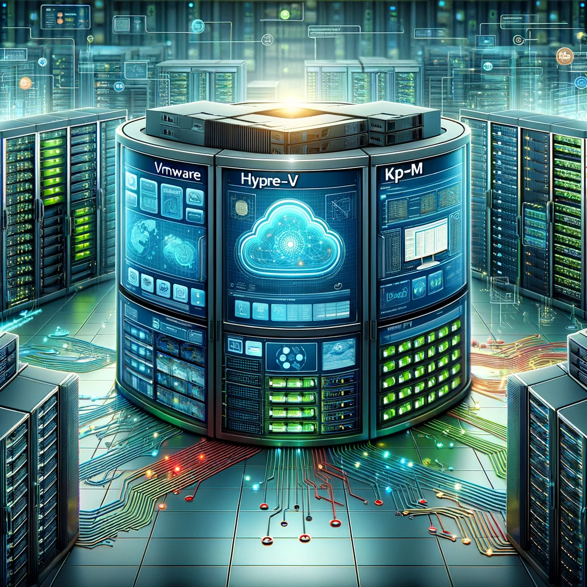

OPEN Group Master Certified Architect
ABOUT ME
With over twenty years of IT experience, I have served as a transformative leader for Fortune 500 companies, directing, managing, and architecting global IT solutions. My expertise spans collaborating with channel partners and systems integrators, leading dispersed technical teams, and crafting vision strategies and roadmaps that advance technical innovation. My forte in technical documentation, presentation, and public speaking has been pivotal in elucidating complex architectural and business processes.
A significant portion of my career has been dedicated to program management and project engineering, emphasizing delivery assurance and risk mitigation. Fiscal responsibility has also been a hallmark of my tenure, managing IT budgets and optimizing capital and operational expenditures. My experience with endpoint detection, SIEM systems, and incident response complements my in-depth knowledge of network security, working with industry stalwarts like Cisco and Palo Alto Networks.
My technical proficiency encompasses a broad spectrum from database management, data warehousing, particularly with Oracle technologies, to overseeing enterprise data migrations. As cloud computing has evolved, so has my experience, encompassing AWS, Azure, GCP, and IBM cloud services, aligning with the modern era of digital transformation, DevOps, and CI/CD methodologies.
I’ve also embraced infrastructure as code, leveraging Terraform, and programming languages such as Python, JavaScript, and more, to ensure efficient and scalable cloud architectures. Container orchestration, server, application, and desktop virtualization are among my technical proficiencies, ensuring agile and secure IT environments. My comprehensive approach extends to business continuity and disaster recovery, safeguarding systems and data across multiple platforms and storage solutions, and ensuring robust and resilient IT operations.

Some of my recent projects!
Global IT Experience
Architect, Engineer, Sales Leader
Collaboration
Partners & Systems Integrators

Technical Team-Management
Geographically Dispersed & Crossfunctional
Technical Solutions
Vision Strategy & Roadmaps
Soft Skills
Writer, Presenter & Speaker
Project Management
Assurance, Risk & Mitigation Planning
Budgets
CapEX & OpEX
Cybersecurity
Endpoint Detection, SIEM & CSIRT
DevSecOps
OWASP10
Perimeter Cybersecurity
Cisco, Juniper, PA & CheckPoint

Compliance
SOX, GPDR, PCI & NIST
Database Experience
SQL & noSQL
Cloud Computing
IBM, AWS, Azure & GCP
Cloud Computing
IaaS, PaaS, SaaS & IaC
Cloud Migration
Lift & Shift & Data Migration
Digital Transformation
MLOps, DevOps, CI/CD & APIs
Version Control
Git, GitHub
Containerization
Kubernetes, Openshift & Tanzu
Server Virtualization
VMware, Hyper-V & KVM
Desktop Virtualization
Citrix Xen Desktop & VMware Horizon
Application Virtualization
Citrix XenApp, VMware Horizon
MDM
Blackberry & Mobile Iron
Business Continuity
HA & DR, GSLB & Zerto
Backup
HP, Veeam, Veritas & Commvault
Enterprise Storage
HP EVA, Dell Isilon & NetApp
IBM POWER
i Series & AIX
DATA
Lakes, Oceans and Rivers